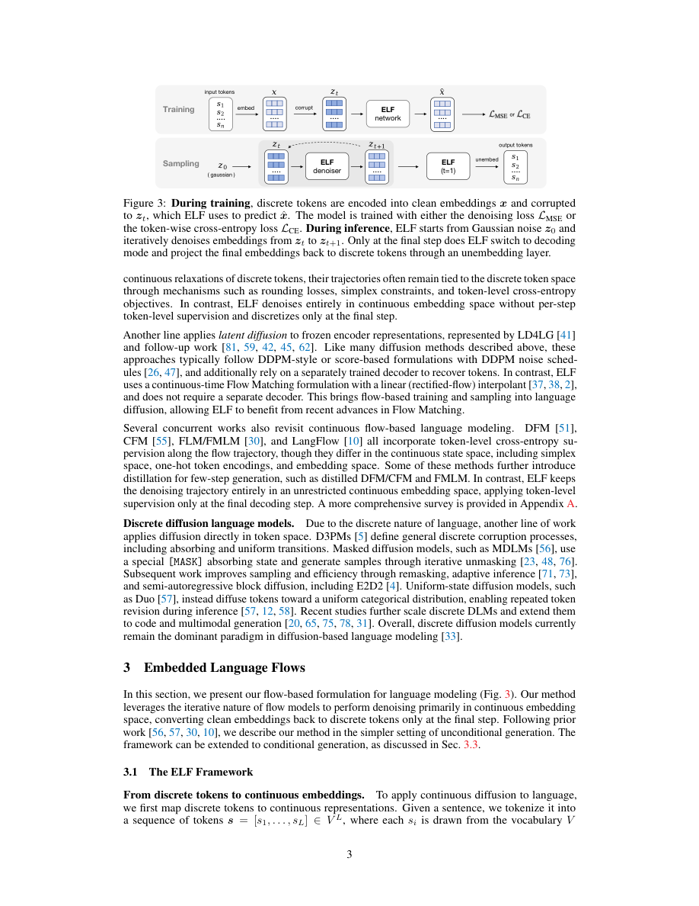

#1
★ 8/10
ELF: Embedded Language Flows
ELF：嵌入语言流

图 Figure · Page 3 of paper
🎯 在连续嵌入空间做流匹配，让扩散语言模型真正好用。
Continuous flow matching in embedding space makes diffusion language models competitive with minimal adaptation.
| 维度 | 中文 | English |
|---|---|---|
| ❓ 待解决 的问题 |
扩散模型在图像和视频生成领域大获成功，但文本是离散的（词元），难以直接套用。现有的扩散语言模型大多还是在离散空间操作，无法充分借鉴图像扩散的成熟技术（如分类器自由引导）。核心问题是：能否以最小改动让连续扩散方法在语言上也真正奏效？ | Diffusion models have conquered image and video generation, but applying them to language is hard because text is discrete (tokens), not continuous. Existing diffusion language models (DLMs) mostly work directly on discrete tokens, which limits their ability to borrow powerful techniques from image diffusion. The question is: can a continuous diffusion approach work well for language with minimal changes? |
| 💡 解决 的亮点 |
• 全程在连续词嵌入空间运行，只在最后一步用共享权重网络映射回离散词元，流程简洁优雅。\n• 将连续时间流匹配（Flow Matching）直接应用于语言嵌入，无缝复用图像扩散的分类器自由引导（CFG）等成熟技术。\n• 以更少的采样步数实现更优的生成质量，明显超越现有离散与连续扩散语言模型。 | • Operates almost entirely in the continuous token embedding space, only mapping back to discrete tokens at the very last step via a shared-weight network — keeping the pipeline clean and continuous.\n• Directly applies Flow Matching (continuous-time) to language embeddings, enabling straight adoption of image-domain tricks like classifier-free guidance (CFG).\n• Achieves strong generation quality with fewer sampling steps than competing DLMs, closing the gap between discrete and continuous language diffusion. |
| 🧪 实验 内容 |
ELF在标准文本生成基准（如GenBench及多个文本生成测试集）上进行评估，与主流离散扩散语言模型（MDLM、SEDD等）和连续扩散语言模型（CDCD、GENIE等）对比。评估指标包括生成困惑度、MAUVE分数以及外部语言模型评估的生成困惑度。消融实验分析了CFG、采样步数和共享权重解码器各自的贡献。 | ELF was evaluated on standard language generation benchmarks including GenBench and other text generation suites, compared against leading discrete DLMs (e.g., MDLM, SEDD) and continuous DLMs (e.g., CDCD, GENIE). Evaluation metrics included generation perplexity, MAUVE score, and generative perplexity measured by an external language model. Ablations tested the impact of CFG, number of sampling steps, and the shared-weight decoder design. |
| 📊 实验 结果 |
ELF在所有基准测试上均大幅超越现有离散和连续扩散语言模型。与最优离散DLM相比，ELF在生成困惑度和MAUVE分数上达到相当或更优的水平，同时所需采样步数显著更少（例如仅需32–64步即可达到基线需要数百步才能达到的效果）。在连续嵌入空间施加CFG带来了一致的质量提升。ELF填补乃至逆转了连续DLM与离散DLM之间长期存在的性能差距。 | ELF substantially outperforms prior discrete and continuous DLMs across benchmarks. It achieves competitive or superior generation perplexity and MAUVE scores compared to the best discrete DLMs while using significantly fewer sampling steps (e.g., strong performance with as few as 32–64 steps vs. hundreds required by baselines). CFG in the continuous embedding space provides consistent quality boosts. ELF closes or reverses the historical performance gap between continuous and discrete DLMs, demonstrating that continuous approaches can surpass discrete ones with minimal architectural changes. |
| 🏁 结论 | ELF证明了基于嵌入空间流匹配和共享权重解码器的连续扩散语言模型，可以用更少的采样步数、更简洁的架构超越最先进的离散扩散语言模型，为连续扩散方法在语言生成领域的应用奠定了坚实基础。 | ELF demonstrates that continuous diffusion language models, built on Flow Matching in embedding space with a shared-weight decoder, can match or surpass state-of-the-art discrete DLMs with fewer sampling steps and minimal architectural complexity. This establishes continuous embedding-space diffusion as a viable and promising direction for language generation. |
| 🔗 论文 链接 |
arXiv: 2605.10938v1 · 📥 PDF | |
⚙️ Method · 方法详解
ELF将词元嵌入视为连续向量，用连续时间流匹配学习一个向量场，将高斯噪声"输运"到有意义的嵌入分布。生成过程全程在连续空间进行，仅在最后一步通过共享权重网络映射回离散词元。这一设计使得分类器自由引导（CFG）可以直接在连续嵌入空间施加，无需任何特殊适配。共享权重解码器还能保证训练过程中连续表示与离散表示始终对齐。
ELF treats token embeddings as continuous vectors and applies continuous-time Flow Matching to learn a vector field that transports Gaussian noise toward meaningful embedding distributions. The model stays in this continuous space throughout generation, only projecting to discrete tokens at the final step using a network with weights shared across the embedding and decoding layers. This design makes it trivially easy to plug in classifier-free guidance (CFG): the guidance signal is applied in continuous embedding space before the final discretization. The shared-weight decoder also ensures that the continuous and discrete representations stay aligned throughout training.
📐 Key Formulas · 关键公式
\[\frac{d\mathbf{x}}{dt} = v_\theta(\mathbf{x}_t, t)\]
💡 流匹配的核心ODE：神经网络学习一个向量场 $v_\theta$，描述嵌入从噪声到数据的连续演化路径。
The core Flow Matching ODE: the neural network learns a vector field $v_\theta$ that describes how embeddings evolve continuously from noise to data over time.
\[\mathbf{x}_t = (1-t)\mathbf{x}_0 + t\mathbf{x}_1\]
💡 线性插值路径（条件流）：在噪声 $\mathbf{x}_0$ 和数据嵌入 $\mathbf{x}_1$ 之间构造直线轨迹，是流匹配训练的监督目标。
The linear interpolation path (conditional flow): a straight-line trajectory between noise $\mathbf{x}_0$ and data embedding $\mathbf{x}_1$, serving as the training target for the flow network.
🌟 Why It Matters · 为什么重要
这项工作打通了图像/视频扩散范式与语言建模之间的壁垒，证明连续扩散的核心工具（流匹配、CFG）只需极少改动就能迁移到文本领域。这为语言社区借道成熟的连续扩散研究生态铺平了道路，有望加速非自回归文本生成的发展进程。
This work bridges the gap between the highly successful image/video diffusion paradigm and language modeling, showing that the same continuous tools (flow matching, CFG) transfer effectively to text with minimal modification. It opens a practical path for the language community to leverage the rich ecosystem of continuous diffusion research, potentially accelerating progress in non-autoregressive text generation.